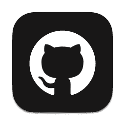
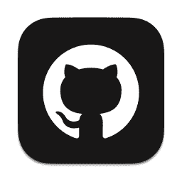

技术支持
博客声明
此博客没有收费项目，请各位谨防上当受骗。此博客不含广告，仅做公益的正版资源共享和技术交流
2022年即将逝去，这一年我经历了：
1.组织了三次租场地羽毛球；进行了两次时事评说，组织了一次班会，成为了班级团支书，审核了团籍，智慧团建窜班，医保系统录入，感觉收获很大；
2.爱上了爬山，享受在山林里听着音乐、抛弃烦恼、放下心事、放空大脑；内蒙古旅行一次，真正的感觉到了轻松，拍了很多照片，听了很多音乐，真正感觉到了自由。妹妹用引动相机拍摄了很多照片，但是运动相机后来坏掉了。这次旅行去了3个省份，去到了中俄边界，看了一次最棒的大马戏，行进2896.18km；全年一共4301.27km；
3.今年我发布了252条朋友圈，67个视频，学习Final Cut Pro.app和Replay模组剪辑和处理视频，了解了fabric的iris模组立体渲染原理；在网易云音乐发布音乐，今年盈利约17.59元，播放量3万，粉丝58人，音乐人指数344；
4.在下半年，班级打羽毛球的人变少了，但是结交了许多八班的同学，和朱暄蕊同学再次建立了联系；和翁铭泽同学交往还没有断开，真正的朋友能经得住时间的考验；
5.自学了HTML、CSS、JavaScript、Swift UI、ScoreBoard编程语言，自学开发了一个网站、一个服务器、三个内网穿透，了解了公网DNS根服务器及其镜像服务器的运行原理，自学有关网络安全的法律，创建了5个GitHub开源项目，跟进了22个开源项目，关注了11位开源者，一个项目组织，4个成员。成为了支付宝开放平台、微博开放平台和百度开放平台的已注册开放开发者。加入BOINC公益志愿项目的World Community Gored。Internet Explore停运。国内最后一架A380退役，波音747停产，四发航飞时代落幕。我相信人生来平等 ，而我生来不凡；
6.今年是做核酸最多的一年，也是疫情反复次数最多的一年；经历了四次网课，分别是3.8-5.5、9.1-9.13、11.5-11.8、11.23-？？？，由于父母出差，需要带手机上学，疫情需要，有56天在吃学校的盒饭，下半年基本没有在学校吃早饭。学校的超市改成了食堂，饭卡取消改成支付宝刷脸支付，高二从综合楼搬家到教学楼学校教学楼安装了电梯；原计划在9月16日开运动会，但是由于疫情取消了；学校下发了学生证；在学校晚饭后夜跑9次，但是后期由于疫情封控中断了；学校下大雪，轰轰烈烈的打雪仗，持续了三天；参与了英才计划项目；经历了一次会考，化学生物地理和历史结业，本来在今年12月份还要有一次会考，但是由于疫情延期了；11.23开始网课，12.10开始班级同学陆续生病，17日英才计划面试低烧，下午姥姥低烧次日缓解，18日下午妹妹高烧不退次日缓解，19日中午我再次低烧；
7.年满16周岁，拥有了自己的银行卡，微信实名认证更改为自己的银行卡；家阳台漏水维修、天然气更换阀门；iMac第一次拆机维修，更换了硬盘、升级了内存；
8..俄乌战争爆发、戈尔巴乔夫逝世、英国女王伊丽莎白二世去世、世界人口突破八十亿、肯德基传奇CEO去世、江泽民去世。二十大召开，疫情形势逐渐放开，疫情可能真的要结束了；
精彩的2022年即将逝去，这一年经历了很多的事情，没有人能像白纸一样没有故事，成长的代价就是失去原来的样子，但是我们燃起斗志，不要循规蹈矩，学会突破自我，发扬个性，别人能做到的我同样能做到，我不比任何人差。那就希望在即将到来的2023年，我能坚持自己的梦想，维持自己的成绩在全校前二百，争取进入全校前一百，坚持锻炼身体，保持视力健康，做出真正的自己！


关注我


 
